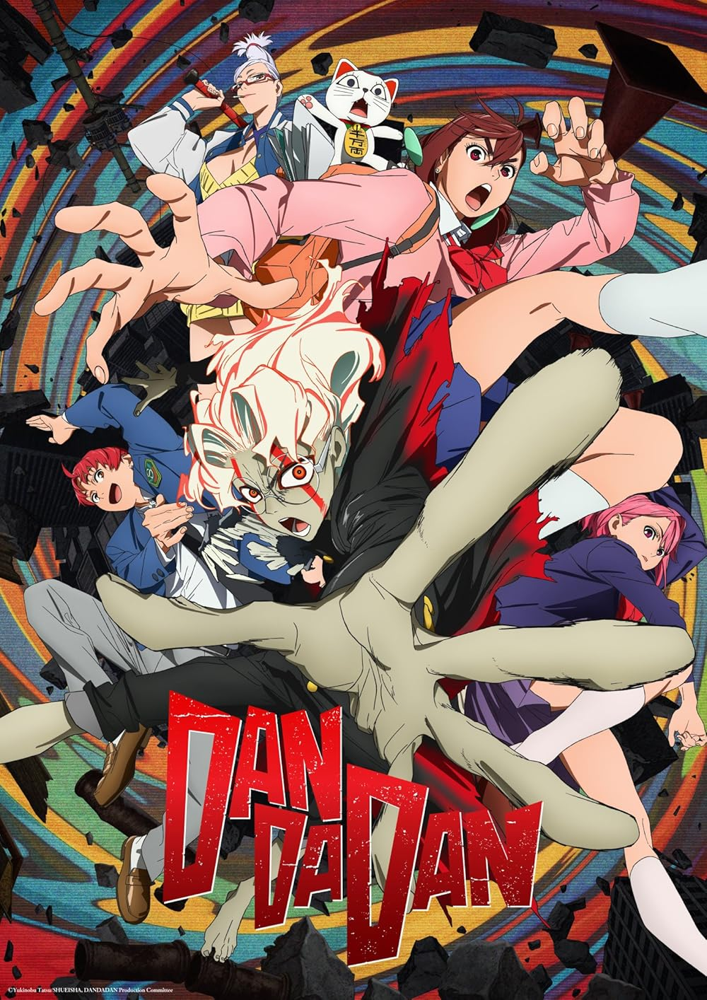

Season 1 (2024)
Momo and Okarun investigate a haunted tunnel on a dare, unleashing real ghosts and aliens that force them to team up and confront supernatural chaos.

Horror, Comedy , Action
follows Momo Ayase, a spirit medium, and Ken "Okarun" Takakura, an occult geek. After a bet to prove their conflicting beliefs, they accidentally unleash supernatural powers and curses.
Momo and Okarun investigate a haunted tunnel on a dare, unleashing real ghosts and aliens that force them to team up and confront supernatural chaos.